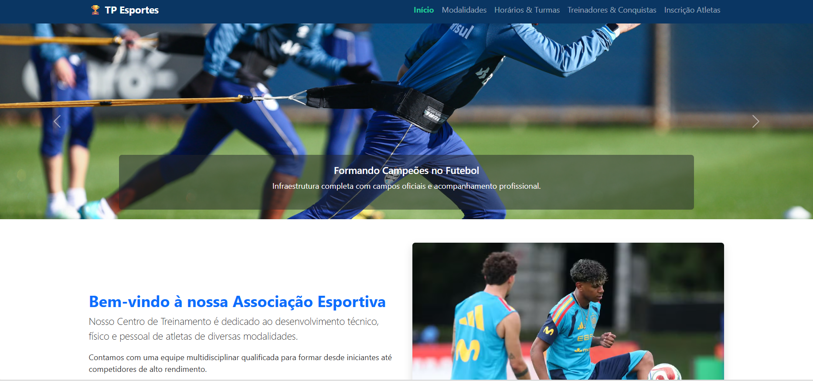

Estudante apaixonada por tecnologia, cursando Desenvolvimento de Sistemas na ETEC Pedro Ferreira Alves através do programa integrado AMS (FATEC).
Ingreso no curso integrado de Desenvolvimento de Sistemas e adaptação à lógica de programação.
Desenvolvimento de projetos web, modelagem de bancos de dados e primeiras experiências com metodologias ágeis.
Evolução prática com a criação de um site completo contendo aba de formulário, aplicando HTML e Bootstrap.
Construção deste portfólio profissional (HTML, CSS e Bootstrap) mirando a transição para o 2° ano.
Uma seleção dos meus melhores trabalhos desenvolvidos no curso AMS.

Projeto desenvolvido no 3º bimestre contendo estruturação semântica, layout responsivo e uma aba completa de formulário estilizada com Bootstrap.
Projeto desenvolvido para as aulas de Sistemas Embarcados e IoT, envolvendo montagem de circuitos lógicos, sensores e automação simulada no Tinkercad.
Espaço reservado para adicionar mais um projeto relevante da sua grade curricular do AMS.